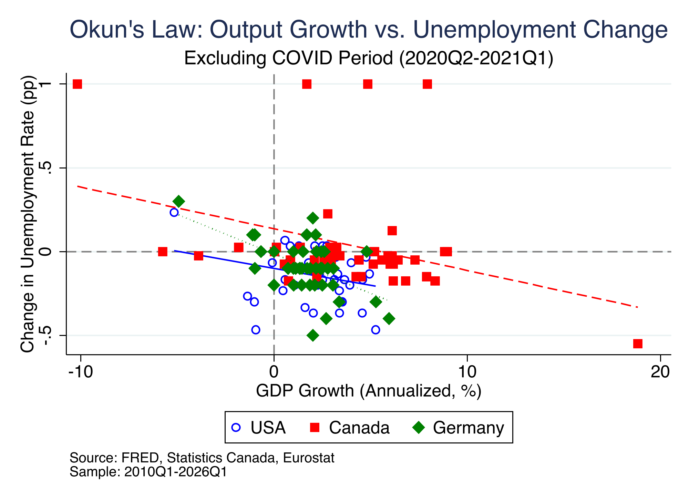
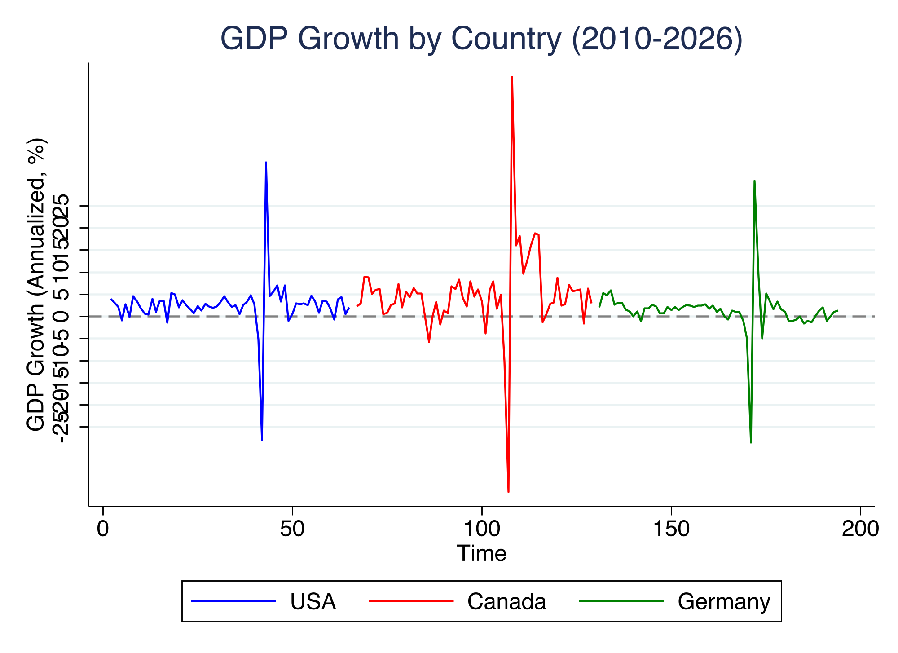
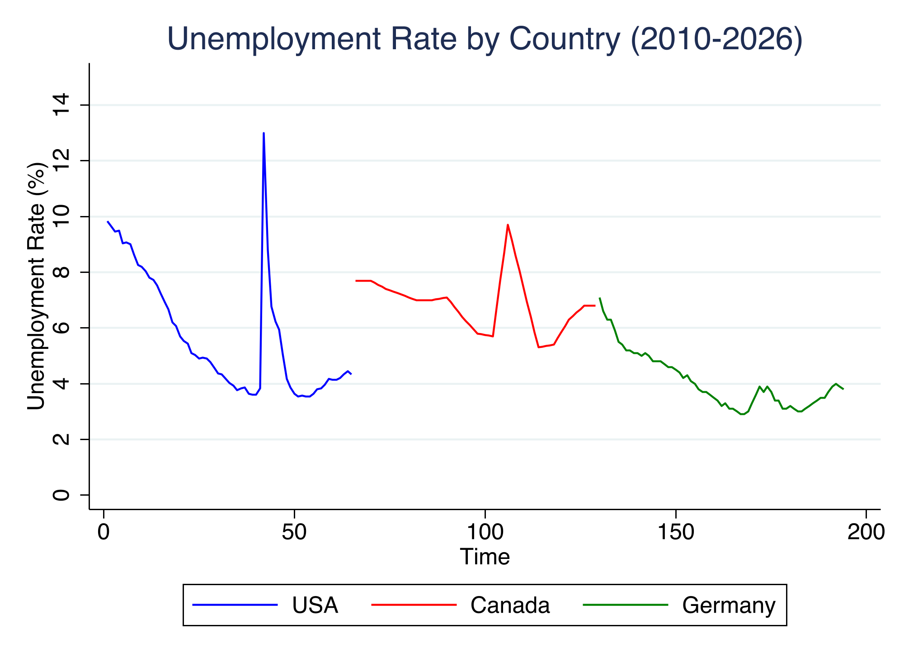

通过 WebSearch 检索 Springer、ScienceDirect、MDPI、EconStor 等数据库。使用 research-pipeline Skill 中的文献调研流程发现 Neely (2010) 奥肯定律更新研究的缺口——缺乏后疫情时代的跨国比较证据。使用 scansci-pdf MCP 下载论文原文（Russnak 2023、Boda 2023 等）。
通过统一 MCP 协议从 FRED 获取美国 GDPC1/UNRATE、加拿大统计局季度 GDP、欧盟统计局德国 GDP增长率与失业率。OpenEcon MCP 作为主数据通道，FRED MCP 作为验证通道。使用 chrome-devtools MCP 自动注册 FRED API Key。
数据清洗、加拿大年度失业率→季度线性插值（annual_to_quarterly函数）、德国GDP指数重建（从增长率反推2010Q1=100基准）、三国数据合并为统一面板CSV（194 obs × 7 columns）。
分国 OLS 回归（4个子样本：全样本/排除COVID/COVID前/COVID后）、Newey-West HAC 稳健标准误（max lag=4）、混合固定效应模型（国家虚拟变量）、交互效应检验（i.cid#c.gdp_growth）、盈亏平衡增长率计算、3个图表导出。全程通过 stata-mcp 桥接（npx mcp-remote → http://localhost:4000/mcp-streamable → Stata MP 18 batch mode）。
使用 auto-review-loop Skill 进行多轮学术审稿。每轮：GPT-5.4 xhigh 评审 → 输出评分(1-10) + 弱点列表 → 自动实现修改 → 重新评审。修复了文献覆盖不全面、统计表述不严谨、方法讨论深度不足等问题。
使用 writing-plans Skill 规划论文结构并输出英中双语的 LaTeX 源码。英文版使用 PDFLaTeX 编译（12页），中文版使用 XeLaTeX + ctex 宏包编译（11页，688KB）。含 JEL 分类、关键词、参考文献（BibTeX natbib格式）、附录数据说明。
本项目通过 MCP (Model Context Protocol) 桥接 AI
与外部工具，所有服务统一在 mcp.json 中声明。
协议：Streamable HTTP
URL：https://data.openecon.ai/mcp
认证：免 API Key
统一经济学数据接口，内部聚合了 FRED、Statistics Canada、Eurostat、World Bank、IMF 等多源数据。通过 query_data
工具按系列代码和日期范围获取时间序列。本项目用于获取：US GDPC1（系列 "GDPC1"）、US UNRATE、Canada GDP（STATSCAN）、Germany GDP
增长率和失业率（tipsun30）。
协议：STDIO (npx)
包：@stefanoamorelli/fred-mcp-server
认证：需 FRED API Key（免费注册）
St. Louis Fed 官方数据接口。作为 OpenEcon 的 US 数据补充/验证通道。使用 chrome-devtools MCP 自动完成 FRED 网站注册并获得 API Key。支持系列搜索（search_series）、观测值查询（get_observations）、元数据获取等功能。
协议：Streamable HTTP
URL：https://maimcpext.worldbank.org/ext/data360/mcp
认证：世界银行官方托管，免 API Key
世界银行指标体系（~3000+ 指标），支持搜索指标、获取数据、国家分组展开、数据汇总等。本项目作为备选数据源验证年/季度宏观经济指标。注意：大部分指标为年度频率，不完全适合季度分析。
协议：STDIO (npx)
包：oecd-mcp
认证：免 API Key
OECD 统计数据接口（SDMX 格式），支持数据流搜索、数据查询、分类浏览。本项目尝试使用 QNA（季度国民账户）数据流获取多国 GDP 数据。注意：SDMX 过滤语法较复杂，部分查询需精确的维度参数。
协议：mcp-remote 桥接
配置：本地 Stata MP 18 → Streamable HTTP 代理
AI Agent 通过 mcp-remote 将 do-file 片段发送到本地 Stata MP 18 实例执行，返回输出文本和图表。核心交互模式：Agent 编写 do-file →
写入磁盘 → Stata batch 执行 → 解析 log
输出。关键路径：/Applications/Stata/StataMP.app/Contents/MacOS/stata-mp -e do okun_multicountry.do
/opt/homebrew/bin/scansci-pdf）：学术 PDF 搜索与下载，支持
DOI 解析、VPN-SCI 代理、论文全文获取npx chrome-devtools-mcp@latest）：浏览器自动化，用于
FRED 注册、数据源验证截图项目依赖 Qoder Agent 模式下加载的一系列 Skills，每个 Skill 封装了特定领域的工作流程与最佳实践。
全流程研究 Skill，覆盖 Stage 1（Idea Discovery → Creation → Novelty Check → Research Review）。自动执行多轮 WebSearch 获取跨数据库前沿文献，对关键 PDF 使用 WebFetch 下载并 Read 提取文本，生成结构化 IDEA_REPORT.md 含文献综述表格、研究缺口识别、3个候选研究想法及多维排名。
Gate 1 完成后自动进入 Stage 2（Data Acquisition），无需人工确认。Pilot Signal 作为核心质量判据，结合 β 值、R² 与方法可行性综合判断。
多轮学术审稿 Skill。每轮流程：Phase A（发送完整上下文给 GPT-5.4 xhigh 评审）→ Phase B（解析评分+弱点+方案）→ Phase C（自动实现修复）→ Phase D（收集修改结果）→ Phase E（记录轮次）。支持 HUMAN_CHECKPOINT 模式（暂停等待用户确认）。状态通过 REVIEW_STATE.json 持久化，上下文压缩后可自动恢复。
MAX_ROUNDS=4, POSITIVE_THRESHOLD ≥6/10, MODEL=gpt-5.4, reasoning_effort=xhigh
结构化论文写作 Skill。根据实证结果生成完整论文框架：Abstract → Introduction → Literature Review → Data & Methodology → Results → Discussion & Conclusion → References → Appendix。输出 LaTeX 源码，自动处理 natbib 参考文献格式、表格排版（booktabs）、图表引用。
以上 Skills 组合形成完整的"学术研究全流程自动化技能链"：从需求输入 → research-pipeline 文献调研 → 数据获取与实证（Python/Stata）→ auto-review-loop 审稿 → writing-plans 论文输出。项目路线：选题细化 → 文献检索与综述 → 研究设计 → 实证接入 → 自动审稿改进 → 全文报告生成。
完整的 296 行 do-file，覆盖从数据导入到图表导出的全部分析流程。
encode country, gen(cid) 按字母序分配：CAN→1, DEU→2, USA→3。但标签定义为 1=USA, 2=CAN, 3=DEU，导致
cid==1 选择了加拿大而非美国，给出完全错误的 "美国" 结果（β=-0.008 而非 -0.19）。
修复：使用显式 gen/replace：
tab cid, gen(d_) 生成 d_1, d_2, d_3；回归式 reg d_unemp ... d_* 中 d_* 通配符匹配到
d_unemp 本身，导致完美多重共线性（R²=1.0）。
修复：用不冲突前缀 cntry_ 替代 d_，回归中显式列出虚拟变量名称。
剔除 2020Q2-2021Q1 后时间序列出现间隔，直接用 tsset quarter 导致 Newey-West 报错。
修复：生成连续时间变量 gen t2 = _n 作为 Newey-West 的时间索引。
| 样本期 | 🇺🇸 美国 β | R² | 🇨🇦 加拿大 β | R² | 🇩🇪 德国 β | R² |
|---|---|---|---|---|---|---|
| 全样本 | -0.1914*** | 0.747 | -0.0084** | 0.063 | -0.0064* | 0.050 |
| 排除 COVID | -0.0202* | 0.071 | -0.0249** | 0.117 | -0.0471*** | 0.310 |
| COVID 前 (2010–2019) | -0.0047 | 0.003 | 0.0020 | 0.001 | -0.0409*** | 0.195 |
| COVID 后 (2021–2026) | -0.0388 | 0.073 | -0.0287*** | 0.382 | -0.0491*** | 0.377 |
*, **, *** 表示 10%, 5%, 1% 水平显著。因变量：ΔU（失业率季度变动，百分点）。GDP 增长率为年化季度增长率。
| 国家 | 样本 | β | NW S.E. | t | N |
|---|---|---|---|---|---|
| 🇺🇸 | 全样本 | -0.1914*** | (0.0273) | -7.02 | 64 |
| 🇺🇸 | 排除COVID | -0.0202** | (0.0099) | -2.05 | 45 |
| 🇨🇦 | 全样本 | -0.0084* | (0.0047) | -1.79 | 63 |
| 🇨🇦 | 排除COVID | -0.0249* | (0.0142) | -1.75 | 44 |
| 🇩🇪 | 排除COVID | -0.0471*** | (0.0074) | -6.39 | 45 |
最大滞后阶数 = 4. OLS 标准误与 NW 标准误差异反映了残差自相关程度。
| 国家 | 全样本 | 排除COVID | COVID前 | COVID后 |
|---|---|---|---|---|
| 🇺🇸 美国 | 2.11% | -4.93% | -31.89% | 0.35% |
| 🇨🇦 加拿大 | 3.28% | 5.49% | - | - |
| 🇩🇪 德国 | -6.62% | -0.29% | -0.94% | -2.72% |
g* = -α/β: 失业率稳定所需的最低GDP增长率。美国全样本2.11%接近经典"3%规则"的季度调整值。

三国对比，含排除COVID异常值后的分国回归线。美国陡峭斜率主要由2020Q2极端观测值驱动。

2020Q2三国同步崩溃（美国-28%，德国-40%，加拿大-17%）→ 复苏路径显著分化。德国波动最大但失业率波动最小。

美国失业率波动最大(+9.2pp)，德国失业率波动最小(±1.2pp)，体现Kurzarbeit的缓冲作用。
Qoder Agent 模式驱动全流程自动化。从自然语言需求 → 文献调研 → 数据获取 → 计量分析 → 审稿 → 论文输出，全程自主执行。
Model Context Protocol 统一连接了 6个核心 MCP 服务：
封装领域知识与最佳实践的 4个核心 Skills：
okun_multicountry.do — Stata 分析 (296行)prepare_multicountry_data.py — 数据预处理 (283行)okun_multicountry_data.csv — 多国数据集 (194 obs)okun_replication.do — 单国US复现 (181行)okuns_law_replication.py — Python分析版本prepare_data.py — 单国数据预处理test_api_connection.py — API并行测试paper_okun_multicountry.tex — 🇬🇧 英文论文paper_okun_multicountry_zh.tex — 🇨🇳 中文论文paper_okun_multicountry.pdf — 英文PDF (12页, 624KB)paper_okun_multicountry_zh.pdf — 中文PDF (11页, 688KB)
IDEA_REPORT.md — 文献调研报告okun_multicountry_results.log — 完整回归输出 (1086行)okun_multicountry_scatter.png — 散点图 (200KB)okun_multicountry_gdp_ts.png — GDP时间序列okun_multicountry_unemp_ts.png — 失业率时间序列okun_figure_stata.png — Stata单国图形okun_ts_stata.png — Stata时间序列图okuns_law_figure.png — Python散点图.gitignore — 版本忽略规则mcp.json — MCP服务声明api_config.json — API配置（含token，已gitignore）index.html — 本展示页面README.md — 项目文档.venv/ — Python虚拟环境📦 完整源码托管于 CNB：https://cnb.cool/xiaosicau/paper-replication
子目录：okuns_law_multicountry/